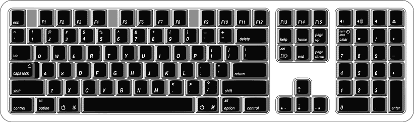

|
PATH |


The iMac comes with an Apple Pro Keyboard. It is a USB compatible full-size keyboard with 15 function keys and separate groups of numeric keypad and editing keys.
The keyboard also provides two additional USB ports; see "Keyboard and USB".
Here is a list of the features of the Apple Pro Keyboard.
| Note: There is no power key on this keyboard. |
There are localized versions of the Apple Pro Keyboard for
use in different parts of the world. The three standards used are
ANSI (US and North America), JIS (Japan), and ISO (Europe). Figure 3-4 shows
the keyboard layout for the ANSI keyboard. Applications can determine
which type of keyboard is connected by calling the Gestalt Manager
and checking for the corresponding value of the gestaltKeyboardType selector:
gestaltUSBAndyANSIKbd (value
= 204)gestaltUSBAndyISOKbd (value
= 205)gestaltUSBAndyJISKbd (value
= 206)Figure 3-4 ANSI keyboard layout
The function keys (F1–F15) can be programmed by the user through the Keyboard Control Panel. Operations that can be assigned include
The keyboard has four multi-media keys: Volume Up, Volume Down, Mute, and Eject. The provide direct control of the those features on the computer by way of the USB.
The Apple Pro Keyboard is designed to work with the iMac by way of the USB ports. The keyboard has a captive cable with a USB Type A connector. The keyboard is a bus-powered USB hub with two USB Type A ports.
WARNINGA bus-powered hub does not provide enough power to support a second bus-powered hub. To use a second bus-powered hub with an iMac, connect it to the second USB port on the computer, not to a port on the Apple USB keyboard.
The standard NMI and reset key combinations are available, but the keys are decoded in software and may not be available under some crashed conditions. Therefore, NMI and reset switches are also available in the computer's I/O panel.
Apple provides a HID class driver for the Apple USB keyboard, which supports the USB boot protocol. Other keyboards intended for use on the Macintosh platform must support the HID boot protocol, as defined in the USB Device Class Definition for Human Interface Devices (HIDs). For information about the USB HID definition, see the HID reference in "USB Interface".
© 2001 Apple Computer, Inc. (Last updated July 18, 2001)